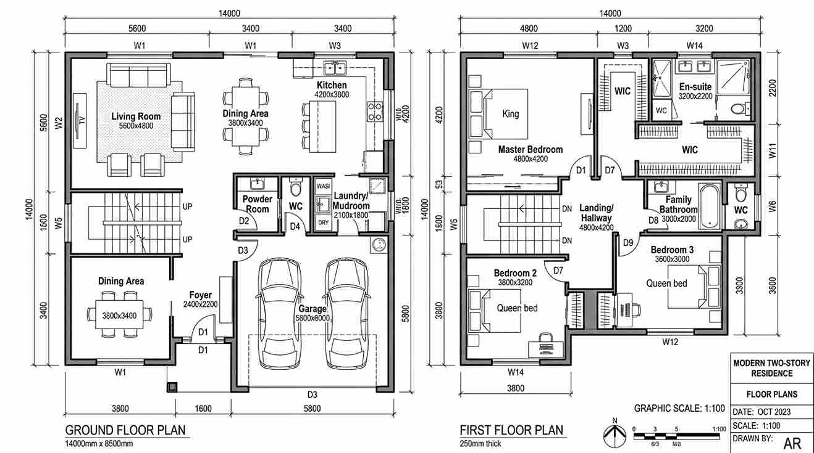

Daftar Isi
Arsitek bertanggung jawab merancang konsep desain rumah secara menyeluruh termasuk aspek fungsi dan estetika, sedangkan drafter berfokus menuangkan konsep yang sudah ada ke dalam gambar teknis tanpa merancang konsep desain dari nol.
Apa Tugas Utama Arsitek Dibanding Drafter?
Arsitek menangani proses perancangan sejak tahap konsep, termasuk analisis kebutuhan ruang, orientasi bangunan terhadap matahari, tata letak fungsional, hingga estetika fasad yang disesuaikan dengan karakter lahan dan keinginan klien.
Drafter, di sisi lain, umumnya bertugas menerjemahkan konsep yang sudah ditentukan menjadi gambar teknis yang presisi, seperti denah, tampak, dan potongan bangunan, tanpa terlibat dalam pengambilan keputusan desain seperti pemilihan gaya arsitektur atau penataan ruang secara konseptual. Arsitek yang tergabung dalam organisasi profesi seperti Ikatan Arsitek Indonesia juga memiliki tanggung jawab etik dan standar kompetensi yang diakui secara resmi, sementara drafter umumnya tidak terikat pada lisensi profesi yang setara.
Kapan Sebaiknya Menggunakan Jasa Arsitek?
Jasa arsitek lebih disarankan ketika pemilik rumah membutuhkan perancangan desain dari nol, terutama untuk lahan dengan bentuk tidak standar, kebutuhan ruang yang kompleks, atau keinginan gaya arsitektur tertentu yang membutuhkan pertimbangan estetika dan fungsi secara menyeluruh.
Arsitek juga lebih tepat dipilih ketika proyek membutuhkan tanggung jawab profesional yang diakui secara hukum, misalnya untuk keperluan pengajuan izin bangunan yang mensyaratkan gambar dari tenaga ahli berlisensi. Biaya jasa arsitek umumnya lebih tinggi dibandingkan drafter karena mencakup proses kreatif dan tanggung jawab profesi, dan pemilik dapat cek biaya beda arsitek dan drafter untuk membandingkan kisaran biaya keduanya sebelum memutuskan.

Kapan Cukup Menggunakan Jasa Drafter Saja?
Jasa drafter cukup digunakan ketika pemilik rumah sudah memiliki konsep desain yang jelas, misalnya dari referensi denah rumah serupa atau hasil diskusi awal dengan keluarga, dan hanya membutuhkan gambar teknis untuk keperluan pelaksanaan konstruksi.
Drafter juga sering dipilih untuk proyek dengan anggaran terbatas yang tidak memerlukan perancangan konsep baru, seperti menggambar ulang denah rumah tetangga yang disukai dengan sedikit penyesuaian ukuran lahan. Meski lebih hemat biaya, penggunaan drafter tanpa keterlibatan arsitek berisiko menghasilkan desain yang kurang optimal dari sisi sirkulasi udara, pencahayaan, atau kesesuaian dengan regulasi tata bangunan setempat, terutama untuk lahan dengan kondisi khusus.
Apa Risiko Salah Memilih antara Arsitek dan Drafter?
Risiko utama salah memilih adalah hasil gambar yang tidak sesuai kebutuhan fungsional rumah, misalnya tata ruang yang kurang efisien atau orientasi bangunan yang tidak memperhitungkan arah matahari, karena drafter umumnya tidak dilatih untuk mempertimbangkan aspek tersebut secara mendalam.
Risiko lain adalah kendala saat pengajuan izin mendirikan bangunan, karena sebagian daerah mensyaratkan gambar kerja disahkan oleh arsitek berlisensi untuk jenis bangunan tertentu, sehingga gambar dari drafter saja berpotensi tidak memenuhi syarat administratif. Pemilik rumah yang masih ragu menentukan kebutuhan antara arsitek dan drafter dapat ajukan form penawaran untuk berkonsultasi terlebih dahulu mengenai skala proyek dan jenis jasa gambar yang paling sesuai dengan kebutuhan serta anggaran yang tersedia.